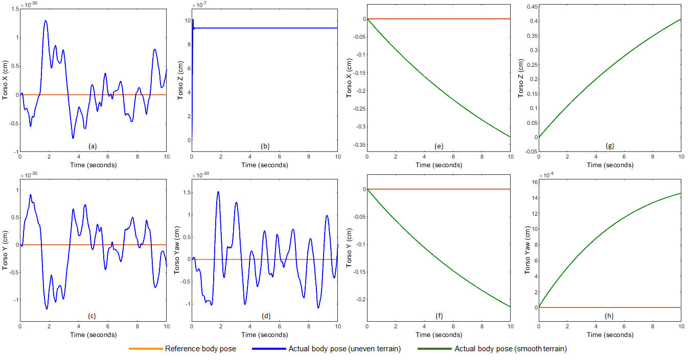
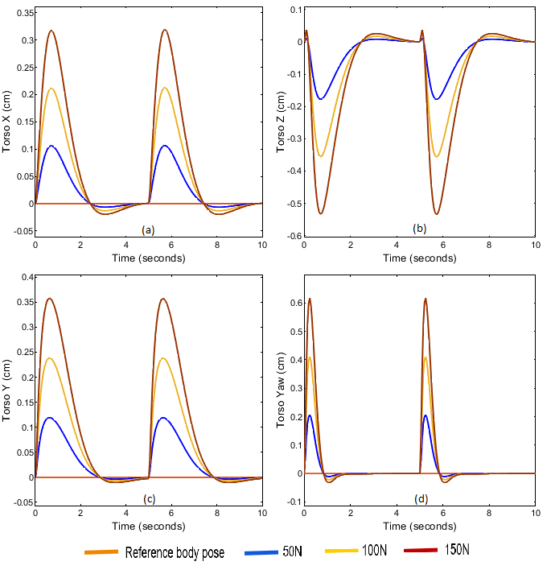

People

Prathamesh Saraf

Prof. Abhishek Sarkar

Prof. Arshad Javed
Legged robots are gaining tremendous popularity due to their all-terrain locomotion properties. The advantage of legged robots is high-speed locomotion along with less surface coverage which makes them suitable for many applications like rescue, inspection, and exploration. Among all legged robots, quadruped robots are the most researched as they provide maximum functionality with a less complex control. Quadruped robots are designed with three main functionalities; high-speed locomotion, high stability for all kinds of terrains, and high jumping capabilities. This work mainly focuses on the stability of quadruped robots on challenging terrains.
In our work, instead of using the Inertial Measurement Unit (IMU) feedback to design the MPC, we use the ground reaction forces at each foot and design a torque based MPC. In addition to this, we are also able to perform gait transitions, provide resistance to external perturbations and sustain falls using MPC. The torque based controller locks the joints at the desired values, thereby reducing vibrations and deviation from set-point. We used the readily available Spot robot by Boston Dynamics in Webots, simulator for testing our controller.
The input to the quadruped state-space model is the ground reaction forces experienced at each foot. Compared to the classical controllers, MPC has a few advantages, which proves it to be the superior one:
This makes MPC a better candidate for multi-constrained systems like legged robots. Apart from the system model and the tuned weights, the MPC needs the initial and the goal position. Depending on the update frequency, the controller estimates its state with respect to the goal position and recalculates its trajectory from that state towards the final position. Here, the controller corrects the reaction forces, which indirectly means joint torque control of each quadruped leg. Consider a simple standing position of the quadruped on flat ground. Since all four legs of Spot have the same kinematic structure, the jacobian matrix will be the same for all. On flat ground, all the 4 feet will experience equal ground reaction force in x, y, and z-direction. Such conditions for different scenarios are defined and the controller is designed.
The mathematical model of the quadruped dynamics used for designing the MPC controller is given below:

There exist multiple quadrupedal gaits for varying speed and terrain definition. In this work, we have implemented the trot, which is meant for medium pace, and the bound gait for high speed locomotion. While bounding, the Left Front (LF) and Right Front (RF) legs move together followed by the Left Hind (LH) and the Right Hind (RH) legs. The phase difference between the Front and Hind legs is 180°. At a particular instance, only the front or the back legs are in the stance phase while the other two are in swing phase.
For trot gait, the two diagonally opposite legs move together, i.e., [RH, LF] followed by [RF, LH]. This gait is meant for medium pace and is found to be more suitable for locomotion uneven terrains as well. The robot was made to execute the bounding gait on flat ground and the inclined uneven terrain in Webots. However, to our notice, the robot was not able to follow the terrain transition and got stuck. A feedback check is added to ensure the torso has a continuous motion. If there is no torso motion for defined period of time, the gait transitioning is executed from bound to trot. The gait cycle for bound to trot transition is shown in the diagram below. Gait transitioning is an unstable operation and may result in the robot losing balance and toppling. It needs to be ensured that during the transition phase, the robots center of mass stays within the support polygon formed by the legs in stance phase. The MPC plays a crucial role in the transition phase1. The robot is able to successfully transition from bound to trot and is able to climb uneven terrains up to elevation of 20°.
The above given model is used as a reference for the end-effector trajectory while designing the MPC. It gives an estimate to the controller as to how the future state of the system might be so that it can rightly predict the action required to maintain stability. It must be noted that this model does not perfectly resemble the future system state but only helps in tuning the controller by assuming similar system nature. In case of high update frequency of MPC (50Hz and above), this reference model has negligible importance. This is because the controller estimates the system state and provides correction at a high rate. However, due to hardware limitations and high computation cost, it is not possible to run MPC at frequencies higher than 30 Hz on the actual robot. We have designed the controller for an update frequency of 20Hz with a sine reference model for simulating uneven terrain. At lower frequencies the reference model plays an important role which can be seen in the figure below. The graph represents the robot’s motion on an uneven terrain recorded for 10 timesteps. For a stable motion, the torso orientation is desired to be [0, 0, z, 0] for [x, y, z, yaw] respectively. The blue curve (a, b, c, d) represents the actual torso motion when sine model was used and the green curve (e, f, g, h) represents the torso motion when the controller was designed using constant reference model.
The torso stability is maintained at the set-point for the sine model whereas continuously increasing values are found in the constant model depicting unstable nature. In order to test the controller’s performance for external disturbances, an impulse signal was given to the model with a time period of 5 s. The amplitude of the impulse signal was increased for finding the tolerable limit. The controller performance can be seen in the figure below. The torso deviates when force is applied but controller corrects the body pose within 2 s time. The recovery time increases from 2 s to 4.5 s for 150 N disturbance which can be called as the limit. After this point, the next deviation will take place before initial correction which will increase instability and lead to toppling. The controller was tuned in MATLAB and tested on the mathematical model. Later the MPC was designed using gekko optimiser and validated in Webots.
The quadruped simplified dynamic equations are modelled and simulated in MATLAB. The MPC controller designed in MATLAB is tested for various environmental conditions and shows promising results. The controller is then verified for similar conditions in Webots. A smooth quadrupedal gait transition from high paced bounding to medium paced trot gait is executed successfully. MATLAB and Webots simulations show that the MPC can handle disturbances up to 150 N and is able to sustain falls from heights up to 80 cm. The robot is also able to traverse on inclined uneven surfaces with the help of the MPC.
The future work will focus on designing the other quadrupedal gaits and designing policies for the robot to achieve stable locomotion on more inclined surfaces. Environment mapping will be explored for dynamic trajectory optimisation on the run. We also plan on designing non-periodic gaits to allow locomotion through rocky and sandy terrain by predicting the safe foothold positions using Reinforcement Learning techniques.
Prathamesh Saraf
Prof. Abhishek Sarkar
Prof. Arshad Javed